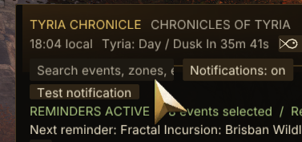

MADE FOR YOUR TIME IN TYRIA
Adventure awaits.
Make time for it.
The next meta. A quiet moment to fish. That legendary you’re working towards. Keep your plans close, without leaving the game.
Windows x64 · Requires Raidcore Nexus · No GW2 API key
LESS KEEPING TRACK. MORE EXPLORING.
A little order.
A world of possibilities.
One companion for the events you love and the goals you choose.
Be there for the next one.
Browse scheduled events with maps, short explanations and waypoints. Search and narrow your view.
Explore events ↗02 / REMINDERSA nudge, when it matters.
Choose reminders by category or event. Mark Done today and give yourself room for something new.
Set up reminders ↗03 / FISHINGCatch the right moment.
Follow Dawn, Day, Dusk and Night. Choose your region and get optional reminders before a phase.
Read the fishing guide ↗04 / PERSONAL LISTSBig goals. Small steps.
Build your own lists or start with farming templates for Obsidian armour, Aurene weapons and more.
Organize your goals ↗05 / SHARINGGood adventures are better shared.
Copy an event or an entire event train with start times and waypoints, ready to paste into game chat.
Learn about sharing ↗FAMILIAR IN SPIRIT. INDEPENDENT BY DESIGN.
Made to sit beside
your adventures.
Warm gold, quiet panels and the information you need close at hand. Built by ZevaXO for fellow adventurers.
Your first five minutes →
YOUR NEXT ADVENTURE STARTS HERE
Bring a little Chronicle
to your Tyria.
Public beta 0.2.12 · Reviewed 11 November 2026
Install Raidcore Nexus separately. Choose the release asset, not “Source code”.
Browse all releases and checksums ↗BUILT TOGETHER, ONE BETA AT A TIME
Your feedback belongs here.
Found a problem? Have an idea? Join the conversation.